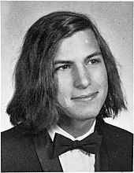
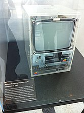
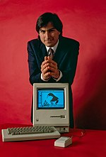
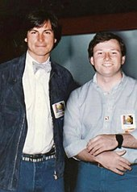
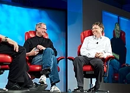
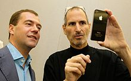
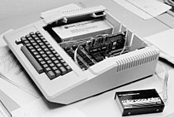
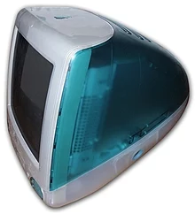
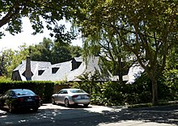

Steven Paul Jobs (February 24, 1955 – October 5, 2011) was an American entrepreneur,
industrial designer, business magnate, media proprietor,
and investor. He was the co-founder, the chairman,
and CEO of Apple; the chairman and majority
shareholder of Pixar; a member of The Walt Disney Company's board of directors following its acquisition of Pixar;
and the founder, chairman, and CEO of NeXT.
He is widely recognized as a pioneer of the personal computer revolution of the 1970s and 1980s,
along with his early business partner and fellow Apple co-founder Steve Wozniak.

Jobs was born in San Francisco to a Syrian father and a German-American mother. He was adopted shortly after his birth. Jobs attended Reed College in 1972 before withdrawing that same year. In 1974, he traveled through India seeking enlightenment and studying Zen Buddhism. He and Wozniak co-founded Apple in 1976 to sell Wozniak's Apple I personal computer. A year later, the duo gained fame and wealth with production and sale of the Apple II, one of the first highly successful mass-produced microcomputers. Jobs saw the commercial potential of the Xerox Alto in 1979, which was mouse-driven and had a graphical user interface (GUI). This led to the development of the unsuccessful Apple Lisa in 1983, followed by the breakthrough Macintosh in 1984, the first mass-produced computer with a GUI. The Macintosh introduced the desktop publishing industry in 1985 with the addition of the Apple LaserWriter, the first laser printer to feature vector graphics.
In 1985, Jobs was forced out of Apple after a long power struggle with the company's board and its then-CEO John Sculley. That same year, Jobs took a few Apple employees with him to found NeXT, a computer platform development company that specialized in computers for higher-education and business markets. In addition, he helped to develop the visual effects industry when he funded the computer graphics division of George Lucas's Lucasfilm in 1986. The new company was Pixar, which produced the first 3D computer-animated feature film Toy Story (1995) and went on to become a major animation studio, producing over 25 films since.
In 1997, Jobs returned to Apple as CEO after the company's acquisition of NeXT. He was largely responsible for reviving Apple, which was on the verge of bankruptcy. He worked closely with English designer Jony Ive to develop a line of products that had larger cultural ramifications, beginning with the "Think different" advertising campaign and leading to the Apple Store, App Store, iMac, iPad, iPod, iPhone, iTunes, and iTunes Store. In 2001, the original Mac OS was replaced with the completely new Mac OS X (now known as macOS), based on NeXT's NeXTSTEP platform, giving the operating system a modern Unix-based foundation for the first time. In 2003, Jobs was diagnosed with a pancreatic neuroendocrine tumor. He died of respiratory arrest related to the tumor on October 5, 2011 at the age of 56.
Background
Biological and adoptive families
Steven Paul Jobs was born in San Francisco, California, on February 24, 1955, the son of Joanne Carole Schieble and Abdulfattah Jandali (Arabic: عبد الفتاح الجندلي). He was adopted by Clara (née Hagopian) and Paul Reinhold Jobs.[2]
Jandali, Jobs' biological father, was Syrian and went by the name "John". He grew up in an Arab Muslim household in Homs, Syria.[3] While an undergraduate at the American University of Beirut in Lebanon, he was a student activist and spent time in prison for his political activities.[3] He pursued a PhD at the University of Wisconsin, where he met Schieble, an American Catholic of German and Swiss descent.[3][4] As a doctoral candidate, Jandali was a teaching assistant for a course Schieble was taking, although both were the same age. [5] Novelist Mona Simpson, Jobs' biological sister, noted that Schieble's parents were not happy that their daughter was dating a Muslim. [6] Walter Isaacson, author of the biography Steve Jobs, additionally states that Schieble's father "threatened to cut her off completely" if she continued the relationship.[4]
Jobs' adoptive father was a Coast Guard mechanic.[7] After leaving the Coast Guard, he married Hagopian, an American of Armenian descent, in 1946.[8] Their attempts to start a family were halted after Hagopian had an ectopic pregnancy, leading them to consider adoption in 1955.[7][8][9] Hagopian's parents were survivors of the Armenian genocide.[10]
Birth and early life
Schieble became pregnant with Jobs in 1954, when she and Jandali spent the summer with his family in Homs. According to Jandali, Schieble deliberately did not involve him in the process: "Without telling me , Joanne upped and left to move to San Francisco to have the baby without anyone knowing, including me."[12]
Schieble gave birth to Jobs in San Francisco on February 24, 1955, and chose an adoptive couple for him that was "Catholic, well-educated, and wealthy",[13][14] but the couple later changed their mind. [13] Jobs was then placed with Paul and Clara Jobs, neither of whom had a college education, and Schieble refused to sign the adoption papers.[15] She then took the matter to court in an attempt to have her baby placed with a different family,[13] and only consented to releasing the baby to Paul and Clara after the couple pledged to pay for the boy's college education.[16] Jobs' cousin, Bassma Al Jandaly, maintains that Jobs' birth name was Abdul Lateef Jandali.[17]
Schieble gave birth to Jobs in San Francisco on February 24, 1955, and chose an adoptive couple for him that was "Catholic, well-educated, and wealthy",[13][14] but the couple later changed their mind.[13] Jobs was then placed with Paul and Clara Jobs, neither of whom had a college education, and Schieble refused to sign the adoption papers.[15] She then took the matter to court in an attempt to have her baby placed with a different family,[13] and only consented to releasing the baby to Paul and Clara after the couple pledged to pay for the boy's college education.[16] Jobs' cousin, Bassma Al Jandaly, maintains that Jobs' birth name was Abdul Lateef Jandali.[17]
Childhood
Paul Jobs worked in several jobs that included a try as a machinist,[21] several other jobs,[22] and then "back to work as a machinist."
| "I always thought of myself as a humanities person as a kid, but I liked electronics… then I read something that one of my heroes, Edwin Land of Polaroid, said about the importance of people could stand at the intersection of humanities and sciences, and I decided that's what I wanted to do." From Steve Jobs[20] |
Paul and Clara adopted Jobs' sister Patricia in 1957[23] and by 1959 the family had moved to the Monta Loma neighborhood in Mountain View, California.[24] It was during this time that Paul built a workbench in his garage for his son in order to "pass along his love of mechanics."[25] Jobs, meanwhile, admired his father's c raftsmanship "because he knew how to build anything. If we needed a cabinet, he would build it. When he built our fence, he gave me a hammer so I could work with him ... I wasn't that into fixing cars ... but I was eager to hang out with my dad."[25] By the time he was ten, Jobs was deeply involved in electronics and befriended many of the engineers who lived in the neighborhood.[26][page needed] He had difficulty making friends with children his own age, however, and was seen by his classmates as a "loner."[26][page needed]
Jobs had difficulty functioning in a traditional classroom, tended to resist authority figures, frequently misbehaved, a nd was suspended a few times.[26][page needed] Clara had taught him to read as a toddler, and Jobs stated that he was " pretty bored in school and [had] turned into a little terror... you should have seen us in the third grade, we basically destroyed the teacher."[26][page needed] He frequently played pranks on others at Monta Loma Elementary School in Mountain View.[28] His father Paul (who was abused as a child) never reprimanded him, however, and instead blamed the school for not challenging his brilliant son.[28]
Jobs would later credit his fourth grade teacher, Imogene "Teddy" Hill, with turning him around: "She taught an advanced fourth grade class and it took her about a month to get hip to my situation. She bribed me into learning. She would say, 'I really want you to finish this workbook. I'll give you five bucks if you finish it.' That really kindled a passion in me for learning things! I learned more that year than I think I learned in any other year in school. They wanted me to skip the next two years in grade school and go straight to junior high to learn a foreign language but my parents very wisely wouldn't let it happen."[26][page needed] Jobs skipped the 5th grade and transferred to the 6th grade at Crittenden Middle School in Mountain View[26][page needed] where he became a "socially awkward loner".[29] Jobs was often "bullied" at Crittenden Middle, and in the middle of 7th grade, he gave his parents an ultimatum: they had to either take him out of Crittenden or he would drop out of school.[30]
Though the Jobs family was not well off, they used all their savings in 1967 to buy a new home, allowing Jobs to change schools.[26][page needed] The new house (a three-bedroom home on Crist Drive in Los Altos, California) was in the better Cupertino School District, Cupertino, California,[31] and was embedded in an environment that was even more heavily populated with engineering families than the Mountain View area was.[26][page needed] The house was declared a historic site in 2013, as it was the first site for Apple Computer;[27] as of 2013, it was owned by Jobs' sister, Patty, and occupied by his step-mother, Marilyn.[32]
When he was 13 in 1968, Jobs was given a summer job by Bill Hewlett (of Hewlett-Packard) after Jobs cold-called him to ask for parts for an electronics project
Homestead High
The location of the Los Altos home meant that Jobs would be able to attend nearby Homestead High School, which had strong ties to Silicon Valley.[20] He began his first year there in late 1968 along with Bill Fernandez.[26][page needed] (Fernandez introduced Jobs to Steve Wozniak, and would later be Apple's first employee.) Neither Jobs nor Fernandez (whose father was a lawyer) came from engineering households and thus decided to enroll in John McCollum's "Electronics 1."[26][page needed] McCollum and the rebellious Jobs (who had grown his hair long and become involved in the growing counterculture) would eventually clash and Jobs began to lose interest in the class.
He underwent a change during mid-1970: "I got stoned for the first time; I discovered Shakespeare, Dylan Thomas, and all that classic stuff. I read Moby Dick and went back as a junior taking creative writing classes."[26][page needed] Jobs also later noted to his official biographer that "I started to listen to music a whole lot, and I started to read more outside of just science and technology—Shakespeare, Plato. I loved King Lear ... when I was a senior I had this phenomenal AP English class. The teacher was this guy who looked like Ernest Hemingway. He took a bunch of us snowshoeing in Yosemite."[33] During his last two years at Homestead High, Jobs developed two different interests: electronics and literature.[33] These dual interests were particularly reflected during Jobs's senior year as his best friends were Wozniak and his first girlfriend, the artistic Homestead junior Chrisann Brennan.
In 1971 after Wozniak began attending University of California, Berkeley, Jobs would visit him there a few times a week. This experience led him to study in nearby Stanford University's student union. Jobs also decided that rather than join the electronics club, he would put on light shows with a friend for Homestead's avant-garde Jazz program. He was described by a Homestead classmate as "kind of a brain and kind of a hippie ... but he never fit into either group. He was smart enough to be a nerd, but wasn't nerdy. And he was too intellectual for the hippies, who just wanted to get wasted all the time. He was kind of an outsider. In high school everything revolved around what group you were in, and if you weren't in a carefully defined group, you weren't anybody. He was an individual, in a world where individuality was suspect." By his senior year in late 1971, he was taking freshman English class at Stanford and working on a Homestead underground film project with Chrisann Brennan
Around that time, Wozniak designed a low-cost digital "blue box" to generate the necessary tones to manipulate the telephone network, allowing free long-distance calls. Jobs decided then to sell them and split the profit with Wozniak. The clandestine sales of the illegal blue boxes went well and perhaps planted the seed in Jobs's mind that electronics could be both fun and profitable.[36] Jobs, in a 1994 interview, recalled that it took six months for him and Wozniak to figure out how to build the blue boxes.[37] Jobs later reflected that had it not been for Wozniak's blue boxes, "there wouldn't have been an Apple" .[38] He states it showed them that they could take on large companies and beat them.
By his senior year of high school, Jobs began using LSD.[41] He later recalled that on one occasion he consumed it in a wheat field outside Sunnyvale, and experienced "the most wonderful feeling of my life up to that point".[42] In mid-1972, after graduation and before leaving for Reed College, Jobs and Brennan rented a house from their other roommate, Al.
Reed College
In September 1972, Jobs enrolled at Reed College in Portland, Oregon.[44] He insisted on applying only to Reed although it was an expensive school that Paul and Clara could ill afford.[45] Jobs soon befriended Robert Friedland,[46] who was Reed's student body president at that time.[26][page needed] Brennan remained involved with Jobs while he was at Reed. He later asked her to come and live with him in a house he rented near the Reed campus, but she refused.
| "I was interested in Eastern mysticism which hit the shores about then. At Reed there was a constant flow of people stopping by – from Timothy Leary and Richard Alpert, to Gary Snyder. There was a constant flow of intellectual questioning about the truth of life. That was the time when every college student in the country read Be Here Now and Diet for a Small Planet." —Steve Jobs[ |
After just one semester, Jobs dropped out of Reed College without telling his parents.[47] Jobs later explained that he decided to drop out because he did not want to spend his parents' money on an education that seemed meaningless to him.[48] He continued to attend by auditing his classes,[48] which included a course on calligraphy that was taught by Robert Palladino. In a 2005 commencement speech at Stanford University, Jobs stated that during this period, he slept on the floor in friends' dorm rooms, returned Coke bottles for food money, and got weekly free meals at the local Hare Krishna temple. In that same speech, Jobs said: "If I had never dropped in on that single calligraphy course in college, the Mac would have never had multiple typefaces or proportionally spaced fonts.
1972–1985
Pre-Apple
In February 1974, Jobs returned to his parents' home in Los Altos and began looking for a job.[51] He was soon hired by Atari, Inc. in Los Gatos, California, which gave him a job as a technician.[51][52] Back in 1973, Steve Wozniak designed his own version of the classic video game Pong and gave the board to Jobs. According to Wozniak, Atari only hired Jobs because he took the board down to the company, and they thought that he had built it himself.[53] Atari's cofounder Nolan Bushnell later described him as "difficult but valuable", pointing out that "he was very often the smartest guy in the room, and he would let people know that.
| "I was lucky to get into computers when it was a very young and idealistic industry. There weren't many degrees offered in computer science, so people in computers were brilliant people from mathematics, physics, music, zoology, whatever. They loved it, and no one was really in it for the money [...] There are people around here who start companies just to make money, but the great companies, well, that's not what they're about."" —Steve Jobs[ |
During this period, Jobs and Brennan remained involved with each other while continuing to see other people. By early 1974, Jobs was living what Brennan describes as a "simple life" in a Los Gatos cabin, working at Atari, and saving money for his impending trip to India.
Jobs traveled to India in mid-1974[55] to visit Neem Karoli Baba[56] at his Kainchi ashram with his Reed friend (and eventual Apple employee) Daniel Kottke, in search of spiritual enlightenment. When they got to the Neem Karoli ashram, it was almost deserted because Neem Karoli Baba had died in September 1973.[52] Then they made a long trek up a dry riverbed to an ashram of Haidakhan Babaji.
After seven months, Jobs left India[57] and returned to the US ahead of Daniel Kottke.[52] Jobs had changed his appearance; his head was shaved and he wore traditional Indian clothing.[58][59] During this time, Jobs experimented with psychedelics, later calling his LSD experiences "one of the two or three most important things [he had] done in [his] life".[60][61] He spent a period at the All One Farm, a commune in Oregon that was owned by Robert Friedland. Brennan joined him there for a period
During this time period, Jobs and Brennan both became practitioners of Zen Buddhism through the Zen master Kōbun Chino Otogawa. Jobs was living in his parents' backyard toolshed, which he had converted into a bedroom.[citation needed] Jobs engaged in lengthy meditation retreats at the Tassajara Zen Mountain Center, the oldest Sōtō Zen monastery in the US.[62] He considered taking up monastic residence at Eihei-ji in Japan, and maintained a lifelong appreciation for Zen.[
Apple(1976–1985)
By March 1976, Wozniak completed the basic design of the Apple I computer and showed it to Jobs, who suggested that they sell it; Wozniak was at first skeptical of the idea but later agreed.[68] In April of that same year, Jobs, Wozniak, and administrative overseer Ronald Wayne founded Apple Computer Company (now called Apple Inc.) as a business partnership in Jobs's parents' Crist Drive home on April 1, 1976.[69] The operation originally started in Jobs's bedroom and later moved to the garage.[69][70] Wayne stayed only a short time, leaving Jobs and Wozniak as the active primary cofounders of the company.[71] The two decided on the name "Apple" after Jobs returned from the All One Farm commune in Oregon and told Wozniak about his time spent in the farm's apple orchard.[72] Jobs originally planned to produce bare printed circuit boards of the Apple I and sell them to computer hobbyists for $50 each.[73][74] To raise the money they needed to build the first batch of the circuit boards, Wozniak sold his HP scientific calculator and Jobs sold his Volkswagen van.[73][74] Later that year, computer retailer Paul Terrell purchased 50 fully assembled units of the Apple I from them for $500 each.[75][76] Eventually about 200 Apple I computers were produced in total.
| "Basically Steve Wozniak and I invented the Apple because we wanted a personal computer. Not only couldn't we afford the computers that were on the market, those computers were impractical for us to use. We needed a Volkswagen. The Volkswagen isn't as fast or comfortable as other ways of traveling, but the VW owners can go where they want, when they want and with whom they want. The VW owners have personal control of their car" —Steve Jobs[ |
A neighbor on Crist Drive recalled Jobs as an odd individual who would greet his clients "with his underwear hanging out, barefoot and hippie-like".[32] Another neighbor, Larry Waterland, who had just earned his PhD in chemical engineering at Stanford, recalled dismissing Jobs's budding business: "'You punched cards, put them in a big deck,' he said about the mainframe machines of that time. 'Steve took me over to the garage. He had a circuit board with a chip on it, a DuMont TV set, a Panasonic cassette tape deck and a keyboard. He said, 'This is an Apple computer.' I said, 'You've got to be joking.' I dismissed the whole idea.'"[32] Jobs's friend from Reed College and India, Daniel Kottke, recalled that as an early Apple employee, he "was the only person who worked in the garage ... Woz would show up once a week with his latest code. Steve Jobs didn't get his hands dirty in that sense." Kottke also stated that much of the early work took place in Jobs's kitchen, where he spent hours on the phone trying to find investors for the company.[32]
hey received funding from a then-semi-retired Intel product marketing manager and engineer Mike Markkula.[78] Scott McNealy, one of the cofounders of Sun Microsystems, said that Jobs broke a "glass age ceiling" in Silicon Valley because he'd created a very successful company at a young age.[40] Markkula brought Apple to the attention of Arthur Rock, which after looking at the crowded Apple booth at the Home Brew Computer Show, started with a $60,000 investment and went on the Apple board.[79] Jobs was not pleased when Markkula recruited Mike Scott from National Semiconductor in February 1977 to serve as the first president and CEO of Apple
After Brennan returned from her own journey to India, she and Jobs fell in love again, as Brennan noted changes in him that she attributes to Kobun (whom she was also still following). It was also at this time that Jobs displayed a prototype Apple I computer for Brennan and his parents in their living room. Brennan notes a shift in this time period, where the two main influences on Jobs were Apple Inc. and Kobun. By early 1977, she and Jobs would spend time together at her home at Duveneck Ranch in Los Altos, which served as a hostel and environmental education center.
In April 1977, Jobs and Wozniak introduced the Apple II at the West Coast Computer Faire.[82] It is the first consumer product to have been sold by Apple Computer. Primarily designed by Wozniak, Jobs oversaw the development of its unusual case and Rod Holt developed the unique power supply.[83] During the design stage, Jobs argued that the Apple II should have two expansion slots, while Wozniak wanted eight. After a heated argument, Wozniak threatened that Jobs should "go get himself another computer". They later decided to go with eight slots.[84] The Apple II became one of the first highly successful mass-produced microcomputer products in the world.[85]
As Jobs became more successful with his new company, his relationship with Brennan grew more complex. In 1977, the success of Apple was now a part of their relationship, and Brennan, Daniel Kottke, and Jobs moved into a house near the Apple office in Cupertino.[citation needed] Brennan eventually took a position in the shipping department at Apple.[86] Brennan's relationship with Jobs deteriorated as his position with Apple grew, and she began to consider ending the relationship. In October 1977, Brennan was approached by Rod Holt, who asked her to take "a paid apprenticeship designing blueprints for the Apples".[citation needed] Both Holt and Jobs believed that it would be a good position for her, given her artistic abilities. Holt was particularly eager that she take the position and puzzled by her ambivalence toward it. Brennan's decision, however, was overshadowed by the fact that she realized she was pregnant and that Jobs was the father. It took her a few days to tell Jobs, whose face, according to Brennan "turned ugly" at the news. At the same time, according to Brennan, at the beginning of her third trimester, Jobs said to her: "I never wanted to ask that you get an abortion. I just didn't want to do that."[citation needed] He also refused to discuss the pregnancy with her.[87] Brennan turned down the internship and decided to leave Apple. She stated that Jobs told her "If you give up this baby for adoption, you will be sorry" and "I am never going to help you."[citation needed] According to Brennan, Jobs "started to seed people with the notion that I slept around and he was infertile, which meant that this could not be his child." A few weeks before she was due to give birth, Brennan was invited to deliver her baby at the All One Farm. She accepted the offer.[citation needed] When Jobs was 23 (the same age as his biological parents when they had him)[87] Brennan gave birth to her baby, Lisa Brennan, on May 17, 1978.[88] Jobs went there for the birth after he was contacted by Robert Friedland, their mutual friend and the farm owner. While distant, Jobs worked with her on a name for the baby, which they discussed while sitting in the fields on a blanket. Brennan suggested the name "Lisa" which Jobs also liked and notes that Jobs was very attached to the name "Lisa" while he "was also publicly denying paternity." She would discover later that during this time, Jobs was preparing to unveil a new kind of computer that he wanted to give a female name (his first choice was "Claire" after St. Clare). She also stated that she never gave him permission to use the baby's name for a computer and he hid the plans from her. Jobs also worked with his team to come up with the phrase, "Local Integrated Software Architecture" as an alternative explanation for the Apple Lisa.[89] Decades later, however, Jobs admitted to his biographer Walter Isaacson that "obviously, it was named for my daughter".[90]
hen Jobs denied paternity, a DNA test established him as Lisa's father.[clarification needed] It required him to give Brennan $385 a month in addition to returning the welfare money she had received. Jobs gave her $500 a month at the time when Apple went public and Jobs became a millionaire. Later, Brennan agreed to give an interview with Michael Moritz for Time magazine for its Time Person of the Year special, released on January 3, 1983, in which she discussed her relationship with Jobs. Rather than name Jobs the Person of the Year, the magazine named the computer[clarification needed] the "Machine of the Year".[91] In the issue, Jobs questioned the reliability of the paternity test (which stated that the "probability of paternity for Jobs, Steven... is 94.1%").[92] Jobs responded by arguing that "28% of the male population of the United States could be the father".[92] Time also noted that "the baby girl and the machine on which Apple has placed so much hope for the future share the same name: Lisa".[92] Jobs was worth over $1 million in 1978, when he was just 23 years old. His net worth grew to over $250 million by the time he was 25, according to estimates.[93] He was also one of the youngest "people ever to make the Forbes list of the nation's richest people—and one of only a handful to have done it themselves, without inherited wealth"
In 1982, Jobs bought an apartment on the top two floors of The San Remo, a Manhattan building with a politically progressive reputation. Although he never lived there,[94] he spent years renovating it with the help of I. M. Pei. In 2003, he sold it to U2 singer Bono. In 1983, Jobs lured John Sculley away from Pepsi-Cola to serve as Apple's CEO, asking, "Do you want to spend the rest of your life selling sugared water, or do you want a chance to change the world?"[95] In 1984, Jobs bought the Jackling House and estate, and resided there for a decade. After that, he leased it out for several years until 2000 when he stopped maintaining the house, allowing exposure to the weather to degrade it. In 2004, Jobs received permission from the town of Woodside to demolish the house in order to build a smaller contemporary styled one. After a few years in court, the house was finally demolished in 2011, a few months before he died.[96]
|
 |  |
| From left to right: Prototype of the original Macintosh from c. 1981 (at the Computer History Museum); Jobs with the Apple Macintosh, January 1984 | |
Jobs began directing the development of the Macintosh in 1981, when he took over the project from early Apple employee Jef Raskin, who conceived the computer (Wozniak, who with Raskin had heavy influence over the program early on in its development, was on leave during this time due to an airplane crash earlier that year[97]).[98][99] On January 22, 1984, Apple aired a Super Bowl television commercial titled "1984", which ended with the words: "On January 24th, Apple Computer will introduce Macintosh. And you'll see why 1984 won't be like 1984."[100] On January 24, 1984, an emotional Jobs introduced the Macintosh to a wildly enthusiastic audience at Apple's annual shareholders meeting held in the Flint Auditorium;[101][102] Macintosh engineer Andy Hertzfeld described the scene as "pandemonium".[103] The Macintosh was based on The Lisa (and Xerox PARC's mouse-driven graphical user interface),[104][105] and it was widely acclaimed by the media with strong initial sales supporting it.[106][107] However, the computer's slow processing speed and limited range of available software led to a rapid sales decline in the second half of 1984.[
Sculley's and Jobs's respective visions for the company greatly differed. The former favored open architecture computers like the Apple II, sold to education, small business, and home markets less vulnerable to IBM. Jobs wanted the company to focus on the closed architecture Macintosh as a business alternative to the IBM PC. President and CEO Sculley had little control over chairman of the board Jobs's Macintosh division; it and the Apple II division operated like separate companies, duplicating services.[110] Although its products provided 85 percent of Apple's sales in early 1985, the company's January 1985 annual meeting did not mention the Apple II division or employees. Many left, including Wozniak, who stated that the company had "been going in the wrong direction for the last five years" and sold most of his stock.[111] Despite being frustrated with the company's (including Jobs himself) dismissal of the Apple II employees in favor of the Macintosh, Wozniak left amicably and remained an honorary employee of Apple, maintaining a friendship with Jobs until his death.
By early 1985, the Macintosh's failure to defeat the IBM PC became clear,[106][107] and it strengthened Sculley's position in the company. In May 1985, Sculley—encouraged by Arthur Rock—decided to reorganize Apple, and proposed a plan to the board that would remove Jobs from the Macintosh group and put him in charge of "New Product Development". This move would effectively render Jobs powerless within Apple.[26][page needed] In response, Jobs then developed a plan to get rid of Sculley and take over Apple. However, Jobs was confronted after the plan was leaked, and he said that he would leave Apple. The Board declined his resignation and asked him to reconsider. Sculley also told Jobs that he had all of the votes needed to go ahead with the reorganization. A few months later, on September 17, 1985, Jobs submitted a letter of resignation to the Apple Board. Five additional senior Apple employees also resigned and joined Jobs in his new venture, NeXT
The Macintosh's struggle continued after Jobs left Apple. Though marketed and received in fanfare, the expensive Macintosh was a hard sell.[115]: 308–309 In 1985, Bill Gates's then-developing company, Microsoft, threatened to stop developing Mac applications unless it was granted "a license for the Mac operating system software. Microsoft was developing its graphical user interface ... for DOS, which it was calling Windows and didn't want Apple to sue over the similarities between the Windows GUI and the Mac interface."[115]: 321 Sculley granted Microsoft the license which later led to problems for Apple.[115]: 321 In addition, cheap IBM PC clones that ran on Microsoft software and had a graphical user interface began to appear. Although the Macintosh preceded the clones, it was far more expensive, so "through the late 1980s, the Windows user interface was getting better and better and was thus taking increasingly more share from Apple".[115]: 322 Windows-based IBM-PC clones also led to the development of additional GUIs such as IBM's TopView or Digital Research's GEM,[115]: 322 and thus "the graphical user interface was beginning to be taken for granted, undermining the most apparent advantage of the Mac...it seemed clear as the 1980s wound down that Apple couldn't go it alone indefinitely against the whole IBM-clone market."[115]: 322
1985–1997
NeXT computer
Following his resignation from Apple in 1985, Jobs founded NeXT Inc.[116] with $7 million. A year later he was running out of money, and he sought venture capital with no product on the horizon. Eventually, Jobs attracted the attention of billionaire Ross Perot, who invested heavily in the company.[117] The NeXT computer was shown to the world in what was considered Jobs's comeback event,[118] a lavish invitation-only gala launch event[119] that was described as a multimedia extravaganza.[120] The celebration was held at the Louise M. Davies Symphony Hall, San Francisco, California, on Wednesday, October 12, 1988. Steve Wozniak said in a 2013 interview that while Jobs was at NeXT he was "really getting his head together".[97]
NeXT workstations were first released in 1990 and priced at US$9,999. Like the Apple Lisa, the NeXT workstation was technologically advanced and designed for the education sector, but was largely dismissed as cost-prohibitive for educational institutions.[121] The NeXT workstation was known for its technical strengths, chief among them its object-oriented software development system. Jobs marketed NeXT products to the financial, scientific, and academic community, highlighting its innovative, experimental new technologies, such as the Mach kernel, the digital signal processor chip, and the built-in Ethernet port. Making use of a NeXT computer, English computer scientist Tim Berners-Lee invented the World Wide Web in 1990 at CERN in Switzerland.[122] The revised, second generation NeXTcube was released in 1990. Jobs touted it as the first "interpersonal" computer that would replace the personal computer. With its innovative NeXTMail multimedia email system, NeXTcube could share voice, image, graphics, and video in email for the first time. "Interpersonal computing is going to revolutionize human communications and groupwork", Jobs told reporters.[123] Jobs ran NeXT with an obsession for aesthetic perfection, as evidenced by the development of and attention to NeXTcube's magnesium case.[124] This put considerable strain on NeXT's hardware division, and in 1993, after having sold only 50,000 machines, NeXT transitioned fully to software development with the release of NeXTSTEP/Intel.[125] The company reported its first yearly profit of $1.03 million in 1994.[126] In 1996, NeXT Software, Inc. released WebObjects, a framework for Web application development. After NeXT was acquired by Apple Inc. in 1997, WebObjects was used to build and run the Apple Store,[125] MobileMe services, and the iTunes Store.
Pixar and Disney
In 1986, Jobs funded the spinout of The Graphics Group (later renamed Pixar) from Lucasfilm's computer graphics division for the price of $10 million, $5 million of which was given to the company as capital and $5 million of which was paid to Lucasfilm for technology rights.[127] The first film produced by Pixar with its Disney partnership, Toy Story (1995), with Jobs credited as executive producer,[citation needed] brought financial success and critical acclaim to the studio when it was released. Over the course of Jobs's life, under Pixar's creative chief John Lasseter, the company produced box-office hits A Bug's Life (1998); Toy Story 2 (1999); Monsters, Inc. (2001); Finding Nemo (2003); The Incredibles (2004); Cars (2006); Ratatouille (2007); WALL-E (2008); Up (2009); Toy Story 3 (2010); and Cars 2 (2011). Brave (2012), Pixar's first film to be produced since Jobs's death, honored him with a tribute for his contributions to the studio.[128] Finding Nemo, The Incredibles, Ratatouille, WALL-E, Up, Toy Story 3 and Brave each received the Academy Award for Best Animated Feature, an award introduced in 2001.[129][130] In 2003 and 2004, as Pixar's contract with Disney was running out, Jobs and Disney chief executive Michael Eisner tried but failed to negotiate a new partnership,[131] and in January 2004, Jobs announced that he would never deal with Disney again.[132] Pixar would seek a new partner to distribute its films after its contract expired. In October 2005, Bob Iger replaced Eisner at Disney, and Iger quickly worked to mend relations with Jobs and Pixar. On January 24, 2006, Jobs and Iger announced that Disney had agreed to purchase Pixar in an all-stock transaction worth $7.4 billion. When the deal closed, Jobs became The Walt Disney Company's largest single shareholder with approximately seven percent of the company's stock.[133] Jobs's holdings in Disney far exceeded those of Eisner, who holds 1.7%, and of Disney family member Roy E. Disney, who until his 2009 death held about 1% of the company's stock and whose criticisms of Eisner—especially that he soured Disney's relationship with Pixar—accelerated Eisner's ousting. Upon completion of the merger, Jobs received 7% of Disney shares, and joined the board of directors as the largest individual shareholder.[133][134][135] Upon Jobs's death his shares in Disney were transferred to the Steven P. Jobs Trust led by Laurene Jobs.[136] After Jobs's death Iger recalled in 2019 that many warned him about Jobs, "that he would bully me and everyone else". Iger wrote, "Who wouldn't want Steve Jobs to have influence over how a company is run?", and that as an active Disney board member "he rarely created trouble for me. Not never but rarely". He speculated that they would have seriously considered merging Disney and Apple had Jobs lived.[132] Floyd Norman, of Pixar, described Jobs as a "mature, mellow individual" who never interfered with the creative process of the filmmakers.[137] In early June 2014, Pixar cofounder and Walt Disney Animation Studios President Ed Catmull revealed that Jobs once advised him to "just explain it to them until they understand" in disagreements. Catmull released the book Creativity, Inc. in 2014, in which he recounts numerous experiences of working with Jobs. Regarding his own manner of dealing with Jobs, Catmull writes:[138][page needed] In all the 26 years with Steve, Steve and I never had one of these loud verbal arguments and it's not my nature to do that. ... but we did disagree fairly frequently about things. ... I would say something to him and he would immediately shoot it down because he could think faster than I could. ... I would then wait a week ... I'd call him up and I give my counter argument to what he had said and he'd immediately shoot it down. So I had to wait another week, and sometimes this went on for months. But in the end one of three things happened. About a third of the time he said, 'Oh, I get it, you're right.' And that was the end of it. And it was another third of the time in which [I'd] say, 'Actually I think he is right.' The other third of the time, where we didn't reach consensus, he just let me do it my way, never said anything more about it.[139]
1997–2011
Return to Apple
n 1996, Apple announced that it would buy NeXT for $427 million. The deal was finalized in February 1997,[140] bringing Jobs back to the company he had cofounded. Jobs became de facto chief after then-CEO Gil Amelio was ousted in July 1997. He was formally named interim chief executive on September 16.[141] In March 1998, to concentrate Apple's efforts on returning to profitability, Jobs terminated a number of projects, such as Newton, Cyberdog, and OpenDoc. In the coming months, many employees developed a fear of encountering Jobs while riding in the elevator, "afraid that they might not have a job when the doors opened. The reality was that Jobs's summary executions were rare, but a handful of victims was enough to terrorize a whole company."[142] Jobs changed the licensing program for Macintosh clones, making it too costly for the manufacturers to continue making machines. With the purchase of NeXT, much of the company's technology found its way into Apple products, most notably NeXTSTEP, which evolved into Mac OS X. Under Jobs's guidance, the company increased sales significantly with the introduction of the iMac and other new products; since then, appealing designs and powerful branding have worked well for Apple. At the 2000 Macworld Expo, Jobs officially dropped the "interim" modifier from his title at Apple and became permanent CEO.[143] Jobs quipped at the time that he would be using the title "iCEO".
 |
| Jobs (left) with software developer Wendell Brown in 1984 |
By early 1985, the Macintosh's failure to defeat the IBM PC became clear,[106][107] and it strengthened Sculley's position in the company. In May 1985, Sculley—encouraged by Arthur Rock—decided to reorganize Apple, and proposed a plan to the board that would remove Jobs from the Macintosh group and put him in charge of "New Product Development". This move would effectively render Jobs powerless within Apple.[26][page needed] In response, Jobs then developed a plan to get rid of Sculley and take over Apple. However, Jobs was confronted after the plan was leaked, and he said that he would leave Apple. The Board declined his resignation and asked him to reconsider. Sculley also told Jobs that he had all of the votes needed to go ahead with the reorganization. A few months later, on September 17, 1985, Jobs submitted a letter of resignation to the Apple Board. Five additional senior Apple employees also resigned and joined Jobs in his new venture, NeXT.[26][page needed] The Macintosh's struggle continued after Jobs left Apple. Though marketed and received in fanfare, the expensive Macintosh was a hard sell.[115]: 308–309 In 1985, Bill Gates's then-developing company, Microsoft, threatened to stop developing Mac applications unless it was granted "a license for the Mac operating system software. Microsoft was developing its graphical user interface ... for DOS, which it was calling Windows and didn't want Apple to sue over the similarities between the Windows GUI and the Mac interface."[115]: 321 Sculley granted Microsoft the license which later led to problems for Apple.[115]: 321 In addition, cheap IBM PC clones that ran on Microsoft software and had a graphical user interface began to appear. Although the Macintosh preceded the clones, it was far more expensive, so "through the late 1980s, the Windows user interface was getting better and better and was thus taking increasingly more share from Apple".[115]: 322 Windows-based IBM-PC clones also led to the development of additional GUIs such as IBM's TopView or Digital Research's GEM,[115]: 322 and thus "the graphical user interface was beginning to be taken for granted, undermining the most apparent advantage of the Mac...it seemed clear as the 1980s wound down that Apple couldn't go it alone indefinitely against the whole IBM-clone market."[115]: 322
The company subsequently branched out, introducing and improving upon other digital appliances. With the introduction of the iPod portable music player, iTunes digital music software, and the iTunes Store, the company made forays into consumer electronics and music distribution. On June 29, 2007, Apple entered the cellular phone business with the introduction of the iPhone, a multi-touch display cell phone, which also included the features of an iPod and, with its own mobile browser, revolutionized the mobile browsing scene. While nurturing open-ended innovation, Jobs also reminded his employees that "real artists ship".[145] Jobs had a public war of words with Dell Computer CEO Michael Dell, starting in 1987, when Jobs first criticized Dell for making "un-innovative beige boxes".[146] On October 6, 1997, at a Gartner Symposium, when Dell was asked what he would do if he ran the then-troubled Apple Computer company, he said: "I'd shut it down and give the money back to the shareholders."[147] Then, in 2006, Jobs sent an email to all employees when Apple's market capitalization rose above Dell's. It read: Team, it turned out that Michael Dell wasn't perfect at predicting the future. Based on today's stock market close, Apple is worth more than Dell. Stocks go up and down, and things may be different tomorrow, but I thought it was worth a moment of reflection today. Steve.[148] Jobs was both admired and criticized for his consummate skill at persuasion and salesmanship, which has been dubbed the "reality distortion field" and was particularly evident during his keynote speeches (colloquially known as "Stevenotes") at Macworld Expos and at Apple Worldwide Developers Conferences.[149] Jobs usually went to work wearing a black long-sleeved mock turtleneck made by Issey Miyake, Levi's 501 blue jeans, and New Balance 991 sneakers.[150][151] Jobs told his biographer Walter Isaacson "...he came to like the idea of having a uniform for himself, both because of its daily convenience (the rationale he claimed) and its ability to convey a signature style.
|  |
| Jobs and Bill Gates at the fifth D: All Things Digital conference (D5) in May 2007 |
In 2001, Jobs was granted stock options in the amount of 7.5 million shares of Apple with an exercise price of $18.30. It was alleged that the options had been backdated, and that the exercise price should have been $21.10. It was further alleged that Jobs had thereby incurred taxable income of $20,000,000 that he did not report, and that Apple overstated its earnings by that same amount. As a result, Jobs potentially faced a number of criminal charges and civil penalties. The case was the subject of active criminal and civil government investigations,[153] though an independent internal Apple investigation completed on December 29, 2006 found that Jobs was unaware of these issues and that the options granted to him were returned without being exercised in 2003.[154] In 2005, Jobs responded to criticism of Apple's poor recycling programs for e-waste in the US by lashing out at environmental and other advocates at Apple's annual meeting in Cupertino in April. A few weeks later, Apple announced it would take back iPods for free at its retail stores. The Computer TakeBack Campaign responded by flying a banner from a plane over the Stanford University graduation at which Jobs was the commencement speaker. The banner read "Steve, don't be a mini-player—recycle all e-waste." In 2006, he further expanded Apple's recycling programs to any US customer who buys a new Mac. This program includes shipping and "environmentally friendly disposal" of their old systems.[155] The success of Apple's unique products and services provided several years of stable financial returns, propelling Apple to become the world's most valuable publicly traded company in 2011.[156] Jobs was perceived as a demanding perfectionist[157][158] who always aspired to position his businesses and their products at the forefront of the information technology industry by foreseeing and setting innovation and style trends. He summed up this self-concept at the end of his keynote speech at the Macworld Conference and Expo in January 2007, by quoting ice hockey player Wayne Gretzky: There's an old Wayne Gretzky quote that I love. "I skate to where the puck is going to be, not where it has been." And we've always tried to do that at Apple. Since the very, very beginning. And we always will.[159]
|  |
| Jobs demonstrating the iPhone 4 to Russian President Dmitry Medvedev on June 23, 2010 |
Health problems
In October 2003, Jobs was diagnosed with cancer. In mid 2004, he announced to his employees that he had a cancerous tumor in his pancreas.[163] The prognosis for pancreatic cancer is usually very poor;[164] Jobs stated that he had a rare, much less aggressive type, known as islet cell neuroendocrine tumor.[163] Despite his diagnosis, Jobs resisted his doctors' recommendations for medical intervention for nine months,[165] instead relying on alternative medicine to thwart the disease. According to Harvard researcher Ramzi Amri, his choice of alternative treatment "led to an unnecessarily early death". Other doctors agree that Jobs's diet was insufficient to address his disease. However, cancer researcher and alternative medicine critic David Gorski wrote that "it's impossible to know whether and by how much he might have decreased his chances of surviving his cancer through his flirtation with woo. My best guess was that Jobs probably only modestly decreased his chances of survival, if that."[166][167] Barrie R. Cassileth, the chief of Memorial Sloan Kettering Cancer Center's integrative medicine department,[168] on the other hand, said, "Jobs's faith in alternative medicine likely cost him his life ... He had the only kind of pancreatic cancer that is treatable and curable ... He essentially committed suicide."[169] According to Jobs's biographer, Walter Isaacson, "for nine months he refused to undergo surgery for his pancreatic cancer – a decision he later regretted as his health declined".[170] "Instead, he tried a vegan diet, acupuncture, herbal remedies, and other treatments he found online, and even consulted a psychic. He was also influenced by a doctor who ran a clinic that advised juice fasts, bowel cleansings and other unproven approaches, before finally having surgery in July 2004."[171] He underwent a pancreaticoduodenectomy (or "Whipple procedure") that appeared to remove the tumor successfully.[172][173] Jobs did not receive chemotherapy or radiation therapy.[163][174] During Jobs's absence, Tim Cook, head of worldwide sales and operations at Apple, ran the company.[163] As of January 2006, only Jobs's wife, his doctors, and Iger and his wife knew that his cancer had returned. Jobs told Iger privately that he hoped to live to see his son Reed's high school graduation in 2010.[132] In early August 2006, Jobs delivered the keynote for Apple's annual Worldwide Developers Conference. His "thin, almost gaunt" appearance and unusually "listless" delivery,[175][176] together with his choice to delegate significant portions of his keynote to other presenters, inspired a flurry of media and internet speculation about the state of his health.[177] In contrast, according to an Ars Technica journal report, Worldwide Developers Conference (WWDC) attendees who saw Jobs in person said he "looked fine".[178] Following the keynote, an Apple spokesperson said that "Steve's health is robust."[179] Two years later, similar concerns followed Jobs's 2008 WWDC keynote address.[180] Apple officials stated that Jobs was victim to a "common bug" and was taking antibiotics,[181] while others surmised his cachectic appearance was due to the Whipple procedure.[174] During a July conference call discussing Apple earnings, participants responded to repeated questions about Jobs's health by insisting that it was a "private matter". Others said that shareholders had a right to know more, given Jobs's hands-on approach to running his company.[182][183] Based on an off-the-record phone conversation with Jobs, The New York Times reported, "While his health problems amounted to a good deal more than 'a common bug', they weren't life-threatening and he doesn't have a recurrence of cancer."[184] On August 28, 2008, Bloomberg mistakenly published a 2500-word obituary of Jobs in its corporate news service, containing blank spaces for his age and cause of death. News carriers customarily stockpile up-to-date obituaries to facilitate news delivery in the event of a well-known figure's death. Although the error was promptly rectified, many news carriers and blogs reported on it,[185] intensifying rumors concerning Jobs's health.[186] Jobs responded at Apple's September 2008 Let's Rock keynote by paraphrasing Mark Twain: "Reports of my death are greatly exaggerated."[187][188] At a subsequent media event, Jobs concluded his presentation with a slide reading "110/70", referring to his blood pressure, stating he would not address further questions about his health.[189] On December 16, 2008, Apple announced that marketing vice-president Phil Schiller would deliver the company's final keynote address at the Macworld Conference and Expo 2009, again reviving questions about Jobs's health.[190][191] In a statement given on January 5, 2009, on Apple.com, Jobs said that he had been suffering from a "hormone imbalance" for several months.[192][193] On January 14, 2009, Jobs wrote in an internal Apple memo that in the previous week he had "learned that my health-related issues are more complex than I originally thought".[194] He announced a six-month leave of absence until the end of June 2009, to allow him to better focus on his health. Tim Cook, who previously acted as CEO in Jobs's 2004 absence, became acting CEO of Apple, with Jobs still involved with "major strategic decisions".[194] In 2009, Tim Cook offered a portion of his liver to Jobs, since both share a rare blood type and the donor liver can regenerate tissue after such an operation. Jobs yelled, "I'll never let you do that. I'll never do that."[195] In April 2009, Jobs underwent a liver transplant at Methodist University Hospital Transplant Institute in Memphis, Tennessee.[196][197][198] Jobs's prognosis was described as "excellent".[196]
Resignation
On January 17, 2011, a year and a half after Jobs returned to work following the liver transplant, Apple announced that he had been granted a medical leave of absence. Jobs announced his leave in a letter to employees, stating his decision was made "so he could focus on his health". As it did at the time of his 2009 medical leave, Apple announced that Tim Cook would run day-to-day operations and that Jobs would continue to be involved in major strategic decisions at the company.[199][200] While on leave, Jobs appeared at the iPad 2 launch event on March 2, the WWDC keynote introducing iCloud on June 6, and before the Cupertino City Council on June 7.[201] On August 24, 2011, Jobs announced his resignation as Apple's CEO, writing to the board, "I have always said if there ever came a day when I could no longer meet my duties and expectations as Apple's CEO, I would be the first to let you know. Unfortunately, that day has come."[202] Jobs became chairman of the board and named Tim Cook as his successor as CEO.[203][204] Jobs continued to work for Apple until the day before his death six weeks later
Death
Jobs died at his Palo Alto, California, home around 3 p.m. (PDT) on October 5, 2011, due to complications from a relapse of his previously treated islet-cell pancreatic neuroendocrine tumor,[14][208][209] which resulted in respiratory arrest.[210] He had lost consciousness the day before and died with his wife, children, and sisters at his side.[211] His sister, Mona Simpson, described his death thus: "Steve's final words, hours earlier, were monosyllables, repeated three times. Before embarking, he'd looked at his sister Patty, then for a long time at his children, then at his life's partner, Laurene, and then over their shoulders past them. Steve's final words were: 'Oh wow. Oh wow. Oh wow.'" He then lost consciousness and died several hours later.[211] A small private funeral was held on October 7, 2011, the details of which, out of respect for Jobs's family, were not made public.[212] Apple[213] and Pixar each issued announcements of his death.[214] Apple announced on the same day that they had no plans for a public service, but were encouraging "well-wishers" to send their remembrance messages to an email address created to receive such messages.[215] Apple and Microsoft both flew their flags at half-staff throughout their respective headquarters and campuses.[216][217]
 |
| Flags flying at half-staff outside Apple HQ in Cupertino, on the evening of Jobs's death |
Apple[213] and Pixar each issued announcements of his death.[214] Apple announced on the same day that they had no plans for a public service, but were encouraging "well-wishers" to send their remembrance messages to an email address created to receive such messages.[215] Apple and Microsoft both flew their flags at half-staff throughout their respective headquarters and campuses.[216][217] Bob Iger ordered all Disney properties, including Walt Disney World and Disneyland, to fly their flags at half-staff from October 6 to 12, 2011.[218] For two weeks following his death, Apple displayed on its corporate Web site a simple page that showed Jobs's name and lifespan next to his grayscale portrait.[219][220][221] On October 19, 2011, Apple employees held a private memorial service for Jobs on the Apple campus in Cupertino. Jobs's widow, Laurene, was in attendance, as well as Cook, Bill Campbell, Norah Jones, Al Gore, and Coldplay.[222] Some of Apple's retail stores closed briefly so employees could attend the memorial. A video of the service was uploaded to Apple's website.[222] California Governor Jerry Brown declared Sunday, October 16, 2011, to be "Steve Jobs Day".[223] On that day, an invitation-only memorial was held at Stanford University. Those in attendance included Apple and other tech company executives, members of the media, celebrities, close friends of Jobs, and politicians, along with Jobs's family. Bono, Yo-Yo Ma, and Joan Baez performed at the service, which lasted longer than an hour. The service was highly secured, with guards at all of the university's gates, and a helicopter flying overhead from an area news station.[224][225] Each attendee was given a small brown box as a "farewell gift" from Jobs. The box contained a copy of the Autobiography of a Yogi by Paramahansa Yogananda.[226] Childhood friend and fellow Apple co-founder Steve Wozniak,[227] former owner of what would become Pixar, George Lucas,[228] former rival, Microsoft co-founder Bill Gates,[229] and President Barack Obama[230] all offered statements in response to his death. Per his request, Jobs is buried in an unmarked grave at Alta Mesa Memorial Park, the only nonsectarian cemetery in Palo Alto.[231][232] On October 7, 2021, Apple released a commemorative YouTube video on the tenth anniversary of Jobs's passing.[233]
Innovations and designs
Jobs's design aesthetic was influenced by philosophies of Zen and Buddhism. In India, he experienced Buddhism while on his seven-month spiritual journey,[234] and his sense of intuition was influenced by the spiritual people with whom he studied.[234] He also learned from many references and sources, such as modernist architectural style of Joseph Eichler,[citation needed] and the industrial designs of Richard Sapper[235] and Dieter Rams.[citation needed] According to Apple co-founder Steve Wozniak, "Steve didn't ever code. He wasn't an engineer and he didn't do any original design..."[236][237] Daniel Kottke, one of Apple's earliest employees and a college friend of Jobs's, stated: "Between Woz and Jobs, Woz was the innovator, the inventor. Steve Jobs was the marketing person."[238] He is listed as either primary inventor or co-inventor in 346 United States patents or patent applications related to a range of technologies from actual computer and portable devices to user interfaces (including touch-based), speakers, keyboards, power adapters, staircases, clasps, sleeves, lanyards and packages. Jobs's contributions to most of his patents were to "the look and feel of the product". His industrial design chief Jonathan Ive had his name along with Jobs's name for 200 of the patents.[239] Most of these are design patents (specific product designs; for example, Jobs listed as primary inventor in patents for both original and lamp-style iMacs, as well as PowerBook G4 Titanium) as opposed to utility patents (inventions).[240][241] He has 43 issued US patents on inventions.[240] The patent on the Mac OS X Dock user interface with "magnification" feature was issued the day before he died.[242] Although Jobs had little involvement in the engineering and technical side of the original Apple computers,[237] Jobs later used his CEO position to directly involve himself with product design.[243] Involved in many projects throughout his career was his long-time marketing executive and confidant Joanna Hoffman, known as one of the few employees at Apple and NeXT who could successfully stand up to Jobs while also engaging with him.[244] Even while terminally ill in the hospital, Jobs sketched new devices that would hold the iPad in a hospital bed.[211] He also despised the oxygen monitor on his finger, and suggested ways to revise the design for simplicity.[245] Since his death, the former Apple CEO has won 141 patents, more than most inventors win during their lifetimes. Currently, Jobs holds over 450 patents.[246]
Apple I
Although entirely designed by Steve Wozniak, Jobs had the idea of selling the desktop computer, which led to the formation of Apple Computer in 1976. Both Jobs and Wozniak constructed several of the first Apple I prototypes by hand, and sold some of their belongings in order to do so. Eventually, 200 units were produced.[77]
Apple II
The Apple II is an 8-bit home computer, one of the world's first highly successful mass-produced microcomputer products,[85] designed primarily by Wozniak (though Jobs oversaw the development of the Apple II's unusual case[247] and Rod Holt developed the unique power supply[83]). It was introduced in 1977 at the West Coast Computer Faire by Jobs and Wozniak and was the first consumer product sold by Apple.
Apple Lisa
The Lisa is a personal computer designed by Apple during the early 1980s. It was the first personal computer to offer a graphical user interface in a machine aimed at individual business users. Development of the Lisa began in 1978.[248] The Lisa sold poorly, with only 100,000 units sold.[249] In 1982, after Jobs was forced out of the Lisa project,[250] he joined the Macintosh project. The Macintosh is not a direct descendant of Lisa, although there are obvious similarities between the systems. The final revision, the Lisa 2/10, was modified and sold as the Macintosh XL.[251]|  |
| An Apple II with an external modem, designed primarily by Wozniak |
Macintosh
Once he joined the original Macintosh team, Jobs took over the project after Wozniak had experienced a traumatic airplane accident and temporarily left the company.[97] Jobs introduced the Macintosh computer on January 24, 1984. This was the first mass-market personal computer featuring an integral graphical user interface and mouse.[252] This first model was later renamed to "Macintosh 128k" for uniqueness amongst a populous family of subsequently updated models which are also based on Apple's same proprietary architecture. Since 1998,
 |
| Jobs holding up a MacBook Air at the MacWorld Conference & Expo in 2008 |
This first model was later renamed to "Macintosh 128k" for uniqueness amongst a populous family of subsequently updated models which are also based on Apple's same proprietary architecture. Since 1998, Apple has largely phased out the Macintosh name in favor of "Mac", though the product family has been nicknamed "Mac" or "the Mac" since the development of the first model. The Macintosh was introduced by a US$1.5 million Ridley Scott television commercial, "1984".[253] It most notably aired during the third quarter of Super Bowl XVIII on January 22, 1984, and some people consider the ad a "watershed event"[254] and a "masterpiece".[255] Regis McKenna called the ad "more successful than the Mac itself".[256] "1984" uses an unnamed heroine to represent the coming of the Macintosh (indicated by a Picasso-style picture of the computer on her white tank top) as a means of saving humanity from the conformity of IBM's attempts to dominate the computer industry. The ad alludes to George Orwell's novel, Nineteen Eighty-Four, which describes a dystopian future ruled by a televised "Big Brother."[257][258] The Macintosh, however, was expensive, which hindered its ability to be competitive in a market already dominated by the Commodore 64 for consumers, as well as the IBM Personal Computer and its accompanying clone market for businesses.[259] Macintosh systems still found success in education and desktop publishing and kept Apple as the second-largest PC manufacturer for the next decade.
NeXT Computer
After Jobs was forced out of Apple in 1985, he started NeXT, a workstation computer company. The NeXT Computer was introduced in 1988 at a lavish launch event. Using the NeXT Computer, Tim Berners-Lee created the world's first web browser, the WorldWideWeb. The NeXT Computer's operating system, named NeXTSTEP, begat Darwin, which is now the foundation of most of Apple's products such as Macintosh's macOS and iPhone's iOS.
iMac
Apple iMac G3 was introduced in 1998 and its innovative design was directly the result of Jobs's return to Apple. Apple boasted "the back of our computer looks better than the front of anyone else's
|  |
| The original Imac |
Described as "cartoonlike", the first iMac, clad in Bondi Blue plastic, was unlike any personal computer that came before. In 1999, Apple introduced the Graphite gray Apple iMac and since has varied the shape, color and size considerably while maintaining the all-in-one design. Design ideas were intended to create a connection with the user such as the handle and a "breathing" light effect when the computer went to sleep.[263] The Apple iMac sold for $1,299 at that time. The iMac also featured forward-thinking changes, such as eschewing the floppy disk drive and moving exclusively to USB for connecting peripherals. This latter change resulted, through the iMac's success, in the interface being popularized among third-party peripheral makers—as evidenced by the fact that many early USB peripherals were made of translucent plastic (to match the iMac design).[264]
iPhone
Apple began work on the first iPhone in 2005 and the first iPhone was released on June 29, 2007. The iPhone created such a sensation that a survey indicated six out of ten Americans were aware of its release. Time declared it "Invention of the Year" for 2007 and included it in the All-TIME 100 Gadgets list in 2010,
 |
| Jobs unveiling the iPhone at MacWorld Conference & Expo on January 9, 2007 |
category of Communication.[268] The completed iPhone had multimedia capabilities and functioned as a quad-band touch screen smartphone. A year later, the iPhone 3G was released in July 2008 with three key features: support for GPS, 3G data and tri-band UMTS/HSDPA. In June 2009, the iPhone 3GS, whose improvements included voice control, a better camera, and a faster processor, was introduced by Phil Schiller.[269] The iPhone 4 was thinner than previous models, had a five megapixel camera capable of recording video in 720p HD, and added a secondary front-facing camera for video calls.[270] A major feature of the iPhone 4S, introduced in October 2011, was Siri, a virtual assistant capable of voice recognition.[271]
Personal life
In 1989, Jobs first met his future wife, Laurene Powell, when he gave a lecture at the Stanford Graduate School of Business, where she was a student. Soon after the event, he stated that Laurene "was right there in the front row in the lecture hall, and I couldn't take my eyes off of her ... kept losing my train of thought, and started feeling a little giddy."[19][page needed] After the lecture, Jobs met up with her in the parking lot and invited her out to dinner. From that point forward, they were together, with a few minor exceptions, for the rest of his life.[19][page needed] Jobs proposed on New Year's Day 1990 with "a fistful of freshly picked wildflowers".[19][page needed] They married on March 18, 1991, in a Buddhist ceremony at the Ahwahnee Hotel in Yosemite National Park.[19][page needed] Fifty people, including Jobs's father, Paul, and his sister Mona, attended. The ceremony was conducted by Jobs's guru, Kobun Chino Otogawa. The vegan wedding cake was in the shape of Yosemite's Half Dome, and the wedding ended with a hike (during which Laurene's brothers had a snowball fight). Jobs is reported to have said to Mona: "You see, Mona [...], Laurene is descended from Joe Namath, and we're descended from John Muir."[273] Jobs's and Powell's first child, Reed, was born in September 1991.[274] Jobs's father, Paul, died a year and a half later, on March 5, 1993. Jobs's childhood home remains a tourist attraction and is currently owned by his stepmother (Paul's second wife), Marilyn Jobs.[275] Jobs and Powell had two more children, Erin, born in August 1995, and Eve, born in May 1998.[274] The family lived in Palo Alto, California.[276] A journalist who grew up locally remembered him as owning the house with "the scariest [Halloween] decorations in Palo Alto ... I don't remember seeing him. I was busy being terrified."[277] Although a billionaire, Jobs made it known that, like Bill Gates, he had stipulated that most of his monetary fortune would not be left to his children.[278][279] These technology leaders also had in common another family-related area: both men limited their children's access, age appropriate, to social media, computer games and the Internet.[280][281]
|  |
| Jobs's house in Palo Alto |
 |
| Jobs's house form an adjusent sidewalk |
Jobs proposed on New Year's Day 1990 with "a fistful of freshly picked wildflowers".[19][page needed] They married on March 18, 1991, in a Buddhist ceremony at the Ahwahnee Hotel in Yosemite National Park.[19][page needed] Fifty people, including Jobs's father, Paul, and his sister Mona, attended. The ceremony was conducted by Jobs's guru, Kobun Chino Otogawa. The vegan wedding cake was in the shape of Yosemite's Half Dome, and the wedding ended with a hike (during which Laurene's brothers had a snowball fight). Jobs is reported to have said to Mona: "You see, Mona [...], Laurene is descended from Joe Namath, and we're descended from John Muir."[273] Jobs's and Powell's first child, Reed, was born in September 1991.[274] Jobs's father, Paul, died a year and a half later, on March 5, 1993. Jobs's childhood home remains a tourist attraction and is currently owned by his stepmother (Paul's second wife), Marilyn Jobs.[275] Jobs and Powell had two more children, Erin, born in August 1995, and Eve, born in May 1998.[274] The family lived in Palo Alto, California.[276] A journalist who grew up locally remembered him as owning the house with "the scariest [Halloween] decorations in Palo Alto ... I don't remember seeing him. I was busy being terrified."[277] Although a billionaire, Jobs made it known that, like Bill Gates, he had stipulated that most of his monetary fortune would not be left to his children.[278][279] These technology leaders also had in common another family-related area: both men limited their children's access, age appropriate, to social media, computer games and the Internet.
Family
Chrisann Brennan notes that after Jobs was forced out of Apple, "he apologized many times over for his behavior" towards her and Lisa. She also states that Jobs "said that he never took responsibility when he should have, and that he was sorry".[282] By this time, Jobs had developed a strong relationship with Lisa and when she was nine, Jobs had her name on her birth certificate changed from "Lisa Brennan" to "Lisa Brennan-Jobs".[13][page needed] In addition, Jobs and Brennan developed a working relationship to co-parent Lisa, a change Brennan credits to the influence of his newly found biological sister, Mona Simpson (who worked to repair the relationship between Lisa and Jobs).[13][page needed] Jobs found Mona after first finding his birth mother, Joanne Schieble Simpson, shortly after he left Apple.[283] Jobs did not contact his birth family during his adoptive mother Clara's lifetime, however. He would later tell his official biographer Walter Isaacson: "I never wanted [Paul and Clara] to feel like I didn't consider them my parents, because they were totally my parents [...] I loved them so much that I never wanted them to know of my search, and I even had reporters keep it quiet when any of them found out."[283] However, in 1986, when Jobs was 31, Clara was diagnosed with lung cancer. He began to spend a great deal of time with her and learned more details about her background and his adoption, information that motivated him to find his biological mother. Jobs found on his birth certificate the name of the San Francisco doctor to whom Schieble had turned when she was pregnant. Although the doctor did not help Jobs while he was alive, he left a letter for Jobs to be opened upon his death. As he died soon afterwards, Jobs was given the letter which stated that "his mother had been an unmarried graduate student from Wisconsin named Joanne Schieble."[283] Jobs only contacted Schieble after Clara died in early 1986 and after he received permission from his father, Paul. In addition, out of respect for Paul, he asked the media not to report on his search.[284] Jobs stated that he was motivated to find his birth mother out of both curiosity and a need "to see if she was okay and to thank her, because I'm glad I didn't end up as an abortion. She was twenty-three and she went through a lot to have me."[285] Schieble was emotional during their first meeting (though she wasn't familiar with the history of Apple or Jobs's role in it) and told him that she had been pressured into signing the adoption papers. She said that she regretted giving him up and repeatedly apologized to him for it. Jobs and Schieble would develop a friendly relationship throughout the rest of his life and would spend Christmas together.[286] During this first visit, Schieble told Jobs that he had a sister, Mona, who was not aware that she had a brother.[285] Schieble then arranged for them to meet in New York where Mona worked. Her first impression of Jobs was that "he was totally straightforward and lovely, just a normal and sweet guy."[287] Simpson and Jobs then went for a long walk to get to know each other.[287] Jobs later told his biographer that "Mona was not completely thrilled at first to have me in her life and have her mother so emotionally affectionate toward me ... As we got to know each other, we became really good friends, and she is my family. I don't know what I'd do without her. I can't imagine a better sister. My adopted sister, Patty, and I were never close."[287]
|
"I grew up as an only child, with a single mother. Because we were poor and because I knew my father had emigrated from Syria, I imagined he looked like Omar Sharif. I hoped he would be rich and kind and would come into our lives (and our not-yet-furnished apartment) and help us. Later, after I'd met my father, I tried to believe he'd changed his number and left no forwarding address because he was an idealistic revolutionary, plotting a new world for the Arab people. Even as a feminist, my whole life I'd been waiting for a man to love, who could love me. For decades, I'd thought that man would be my father. When I was 25, I met that man, and he was my brother." —Mona Simpson[211] |
obs then learned his family history. Six months after he was given up for adoption, Schieble's father died, she wed Jandali, and they had a daughter, Mona.[3][288] Jandali states that after finishing his PhD he returned to Syria to work and that it was during this period that Schieble left him[3] (they divorced in 1962).[20] He also states that after the divorce he lost contact with Mona for a period of time: I also bear the responsibility for being away from my daughter when she was four years old, as her mother divorced me when I went to Syria, but we got back in touch after 10 years. We lost touch again when her mother moved and I didn't know where she was, but since 10 years ago we've been in constant contact, and I see her three times a year. I organized a trip for her last year to visit Syria and Lebanon and she went with a relative from Florida.[3] A few years later, Schieble married an ice skating teacher, George Simpson.[288] Mona Jandali took her stepfather's last name and thus became Mona Simpson. In 1970, after divorcing her second husband, Schieble took Mona to Los Angeles and raised her on her own.[288] When Simpson found that their father, Abdulfattah Jandali, was living in Sacramento, California, Jobs had no interest in meeting him as he believed Jandali didn't treat his children well.[289] Simpson went to Sacramento alone and met Jandali, who worked in a small restaurant.[290] Jandali and Simpson spoke for several hours, during which time he told her that he had left teaching for the restaurant business.[290] He also said that he and Schieble had given another child away for adoption but that "we'll never see that baby again. That baby's gone."[290] At the request of Jobs, Simpson did not tell Jandali that she had met his son.[290] Jandali further told Simpson that he once managed a Mediterranean restaurant near San Jose and that "all of the successful technology people used to come there. Even Steve Jobs ... oh yeah, he used to come in, and he was a sweet guy and a big tipper."[290] After hearing about the visit, Jobs recalled that "it was amazing ... I had been to that restaurant a few times, and I remember meeting the owner. He was Syrian. Balding. We shook hands."[290] However, Jobs still did not want to meet Jandali because "I was a wealthy man by then, and I didn't trust him not to try to blackmail me or go to the press about it ... I asked Mona not to tell him about me."[290] Jandali later discovered his relationship to Jobs through an online blog. He then contacted Simpson and asked "what is this thing about Steve Jobs?" Simpson told him that it was true and later commented, "My father is thoughtful and a beautiful storyteller, but he is very, very passive ... He never contacted Steve."[286] Because Simpson herself researched her Syrian roots and began to meet members of the family, she assumed that Jobs would eventually want to meet their father, but he never did.[286] Jobs also never showed an interest in his Syrian heritage or the Middle East.[286] Simpson fictionalized the search for their father in her 1992 novel The Lost Father.[286] Malek Jandali is their cousin.[291]
Philanthropy
Jobs kept his philanthropic and charitable efforts private; he donated $50 million to Stanford hospital and also contributed to efforts to cure AIDS.[292] He also formed his own charitable foundation called the Steven P. Jobs foundation in 1985
Honors and awards
- 1985: National Medal of Technology (with Steve Wozniak), awarded by US President Ronald Reagan
- 1987: Jefferson Award for Public Service
- 1989: Entrepreneur of the Decade by Inc. magazine
- 1991: Howard Vollum Award from Reed College
- 2004–2010: Listed among the Time 100 Most Influential People in the World on five separate occasions.
- 2007: Named the most powerful person in business by Fortune magazine
- 2007: Inducted into the California Hall of Fame, located at The California Museum for History, Women and the Arts
- 2012: Grammy Trustees Award, an award for those who have influenced the music industry in areas unrelated to performance
- 2012: Posthumously honored with an Edison Achievement Award for his commitment to innovation throughout his career
- 2013: Posthumously inducted as a Disney Legend[
- 2017: Steve Jobs Theatre opens at Apple Park
- 2022: Posthumously awarded the Presidential Medal of Freedom by US President Joe Biden